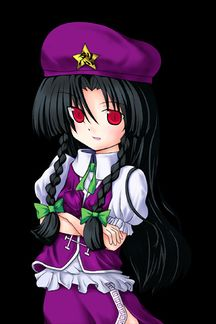

- Welcome to Touhou Wiki!
- Please register to edit. For assistance, check in with our Discord server or IRC channel.
Fan-made characters/Lie Meiling
Lie Meiling | |
|---|---|
|
 Lie Meiling from Touhou Rekkaden Eternity and ConstantMore Character Titles | |
| Species | |
| Abilities |
Power to produce Qi |
| Occupation |
former-gatekeeper |
| Location |
Formally the Scarlet Devil Mansion, unknown |
Music Themes | |
|
夜想 ～evening party～ (Touhou Rekkaden) | |
Appearances | |
| Official Games | |
| |
Lie Meiling (烈 美鈴 Rye Meirin) is a fan-made character created by LION HEART. She is a youkai that's Hong Meiling's future-self. It's unknown if ZUN's aware of this character.
General Information[edit]
Lie first appeared in the fangame Touhou Rekkaden as the final boss and reappeared as the mid-boss of the Extra stage along with Reimu Hakurei and Yukari Yakumo. She was formerly the gatekeeper of the Scarlet Devil Mansion known as Hong Meiling and is described as not being a friendly character.
In Touhou Rekkaden, Meiling stumbles across an ancient, forgotten grimoire in the Scarlet Devil Mansion library. After taking it with permission from Patchouli Knowledge, she gains more knowledge about her own ability: using Qi. Shortly afterwards, Yukari appears to her and offers to train her for reasons unknown, pitting Meiling against various residents of Gensokyo. It's later discovered that the grimoire filled Meiling with an evil energy, and that by defeating enemies, this energy would grow and eventually consume her, an outcome that Yukari wanted to see come to full fruition. For the final match, Yukari pits Meiling against what would eventually become her future self: Lie Meiling.
Ability[edit]
- Power to produce Qi
Her ability is quite similar to Hong Meiling's power to using Qi since she says "karma from the past!" except that she's able to produce it.
Character Basis[edit]
Origin[edit]
Her overall inspiration is from the character design of Hong Meiling, with changing her character to having an antagonistic and darkness personally.
Name[edit]
Her full name is Lie Meiling (烈 美鈴 Rye Meirin). The character for Lie (烈) literally means "fiery, violent, vehement, ardent or extreme" in both Japanese and Chinese. Just like Hong Meiling's name, Meiling (美鈴) means "Beautiful Bell". The latter part of her name, Meiling, is at least a common Chinese name. These characters can be read in Japanese as "Retsu Misuzu", and you may sometimes see her name mispronounced or miswritten that way. Using English name order, her name would actually be "Meiling Lie", which is used normally by Chinese diaspora or immigrants into Western countries.
烈 is "retsu" in the on reading and "liè" in standard Chinese. "Liè" also appears in the title of Touhou Rekkaden (東方烈華伝).
Design[edit]
Her overall appearance is no different to that of Hong Meiling except for the difference in colour. Lie has scarlet-coloured eyes and long, dark hair that symbolises both her name and the darkness that was filled into Hong Meiling. Her purple beret and dress resemble traditional Chinese clothing. Her beret has a gold star on the front with the Traditional Chinese character "烈", which is her name. She doesn't appear to wear white pants like Meiling does.
Story[edit]
| Attention: This section is a stub and it needs expanding with more information related to the section's topic. If you can add to it in any way, please do so. |
- Touhou Rekkaden
- Main article: Touhou Rekkaden: Story
Lie was called in by Yukari Yakumo and threatens to destroy the Scarlet Devil Mansion. She and Meiling were then placed into Yukari's gap for them both to fight. She threatens Meiling to "drop dead", but after a long battle, she was defeated.
Relationships[edit]
Due to being a future-based character of Hong Meiling, she should know everything Meiling has gone through and know all the Gensokyo residents Meiling has officially (and in Touhou Rekkaden, unofficially) met. It appears that Yukari Yakumo is her master and was formally ruled under Remilia Scarlet.
Additional Information[edit]
- Due to the fact that Lie is Hong Meiling, categorising her as a "fan-made character" would be ambiguous. It would be more correct to classify her as an "unofficial alternative of an official character", similar to Sakuya Izayoi being depicted as a dog in the fanbase or comparing Reimu Hakurei and Marisa Kirisame to their PC-98 designs.
- Due to being a future-self of Hong Meiling, she should hold all the knowledge Meiling has, both officially and unofficially from Touhou Rekkaden and other fan-made sources, since the game mocked Meiling's name, calling her "China".
Fandom[edit]
- Lie's design is sometimes humourously criticised for having a rather simple design that's a ripoff from Hong Meiling's.
- However, using art or scripts from games of Meiling are sometimes discoloured to represent Lie, although it's obvious that Meiling's "龍" on her hat doesn't tend to change to "烈".
- While Hong Meiling can be referred to just "Meiling" in the western community, this usage for Lie isn't used and therefore just "Lie" or "Lie Meiling" is used to prevent confusion.
- Before any major English translations on Touhou Rekkaden, some fans believed that Lie was Meiling's sister, although Remilia Scarlet incorrectly comments on this in the game.
Official Profile[edit]
Official Sources[edit]
<toggledisplay showtext="Show sources" hidetext="Hide sources">
- 2005 Touhou Rekkaden
</toggledisplay>
References[edit]